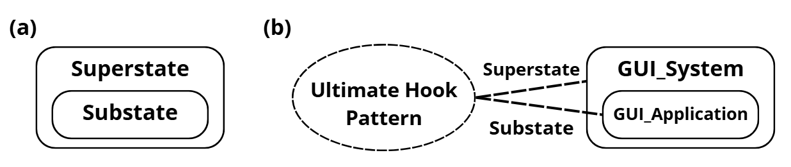

Ultimate Hook#
Il paradigma dell’ “Ultimate Hook” nasce dalla necessità di dare piena libertà al programmatore senza però andare a rinunciare in nessun modo alla standardizzazione di un sistema (es. Windows). La soluzione offerta è un sistema dove tutte le interazioni hanno un modo di default con le quali possono essere gestite ma che non viene eseguito come standard. Il nome è molto evocativo: un “Hook” (gancio) in informatica è un punto in cui puoi “appendere” il tuo codice personalizzato all’interno di un flusso già esistente. L’ “Ultimate Hook” è il gancio definitivo perché non riguarda solo una piccola funzione, ma l’intero ciclo di vita dell’applicazione. Infatti si dà la possibilità al programmatore di gestire l’evento tramite codice e solo se l’evento non è gestito dal programmatore abbiamo un fallback sulla gestione standard.
Per eventi come il click del mouse su una finestra questo paradigma crea una gerarchia degli eventi di questo tipo:
L’evento nasce nel Sistema Operativo che rileva gli input della macchina
Il sistema controlla se l’applicazione gestisce questa interazione
L’applicazione decide se intercettare l’evento con una logica personalizzata o se ignorarlo, lasciando che la gestione di default risalga verso il sistema operativo (meccanismo di fall-through)
Programming by difference#
Questo paradigma (Utilizzato da sistemi operativi mobile e PC) permette al programmatore di non dover scrivere ogni volta codici basilari di gestione di eventi come il codice per trascinare la finestra o per ridurre ad icona. Questo concetto è strettamente legato al principio di Default Behavior (Comportamento predefinito) e riduce drasticamente il Boilerplate code, ovvero tutto quel codice ripetitivo e non specifico alla logica dell’applicazione che sarebbe altrimenti necessario per farla semplicemente funzionare. Gli unici eventi per il quale si deve scrivere del codice sono gli eventi per i quali vogliamo gestire in modo custom all’interno della nostra applicazione. La gestione di tutti gli eventi non implementati verrà passata al sistema operativo che li gestirà in maniera di default, come se il sistema fosse un modello predefinito e tu intervenissi solo quando vuoi modificare una funzionalità.
Esempi pratici#
Il “Programming by difference” si manifesta in modo molto concreto e riconoscibile in due contesti storicamente rilevanti: le applicazioni Windows native (Win32) e le applicazioni Android. Nonostante le differenze sintattiche e architetturali, entrambi i sistemi esprimono la stessa struttura logica: il programmatore gestisce esplicitamente solo gli eventi che gli interessano, e per tutto il resto delega esplicitamente al comportamento di default del sistema.
Win32 WndProc in C#
In Win32, ogni finestra è associata a una Window Procedure (WndProc): una funzione di callback che il sistema operativo chiama ogni volta che si verifica un evento sulla finestra (click, ridimensionamento, chiusura, ecc.).
Il programmatore implementa questa funzione intercettando solo i messaggi rilevanti per la propria applicazione. Tutti i messaggi non gestiti vengono passati a DefWindowProc, ovvero la procedura di default di Windows, che rappresenta il fallback gerarchico descritto nel paradigma.
Il
return 0segnala al sistema che l’evento è stato consumato dall’applicazione e non deve essere propagato oltre. La chiamata aDefWindowProcè invece il fall-through esplicito: l’applicazione rinuncia alla gestione e lascia che il sistema faccia il suo corso.
LRESULT CALLBACK WndProc(HWND hwnd, UINT msg, WPARAM wParam, LPARAM lParam) {
switch (msg) {
case WM_LBUTTONDOWN:
// Evento intercettato: logica custom dell'applicazione
MyApp_HandleClick(wParam, lParam);
return 0; // Evento consumato: non viene propagato al sistema
case WM_DESTROY:
// Intercettiamo anche la chiusura per pulire le risorse
MyApp_Cleanup();
PostQuitMessage(0);
return 0;
// WM_MOVE, WM_SIZE, WM_PAINT e tutti gli altri messaggi
// non sono elencati: cadranno nel default sottostante
}
// Fall-through: tutto ciò che non abbiamo gestito
// viene delegato al comportamento standard di Windows
return DefWindowProc(hwnd, msg, wParam, lParam);
}
// In Java puro (AWT/Swing) lo stesso pattern si esprime
// tramite un WindowAdapter, che fornisce implementazioni
// vuote di default per tutti gli eventi della finestra.
// Il programmatore sovrascrive solo ciò che gli serve.
frame.addWindowListener(new WindowAdapter() {
@Override
public void mouseClicked(MouseEvent e) {
// Evento intercettato: logica custom dell'applicazione
myApp.handleClick(e);
// Non chiamiamo super: l'evento è consumato qui
}
@Override
public void windowClosing(WindowEvent e) {
// Intercettiamo anche la chiusura per pulire le risorse
myApp.cleanup();
frame.dispose();
}
// Tutti gli altri metodi (windowOpened, windowIconified, ecc.)
// non vengono sovrascritti: WindowAdapter li gestisce
// con un corpo vuoto, equivalente al DefWindowProc di Win32
});
Android onTouchEvent in Kotlin/Java#
In Android il paradigma si esprime attraverso l’ereditarietà OOP. Ogni componente visuale (View) ha un insieme di metodi di gestione degli eventi già implementati nella classe base. Il programmatore estende la classe e sovrascrive (override) solo i metodi corrispondenti agli eventi che vuole gestire in modo personalizzato.
Il fall-through non è una chiamata a una funzione di sistema come DefWindowProc, ma una chiamata a super.onTouchEvent(): si delega esplicitamente al comportamento definito dalla classe padre nella gerarchia di ereditarietà.
Il
return trueindica che l’evento è stato consumato dal componente corrente. Ilreturn super.onTouchEvent(event)è il fall-through: il componente rinuncia alla gestione e la passa al livello superiore della gerarchia, esattamente come accade negli statecharts di Harel con l’event bubbling verso il super-stato.
class MyView(context: Context) : View(context) {
override fun onTouchEvent(event: MotionEvent): Boolean {
if (event.action == MotionEvent.ACTION_DOWN) {
// Evento intercettato: logica custom del componente
myCustomLogic()
return true // Evento consumato: non risale alla View padre
}
// Fall-through per tutti gli altri tipi di evento:
// si delega al comportamento default della classe base
return super.onTouchEvent(event)
}
// onDraw(), onMeasure(), onLayout() e tutti gli altri metodi
// non vengono sovrascritti: la classe base View li gestisce
// con il comportamento standard di Android
}
public class MyView extends View {
public MyView(Context context) {
super(context);
}
@Override
public boolean onTouchEvent(MotionEvent event) {
if (event.getAction() == MotionEvent.ACTION_DOWN) {
// Evento intercettato: logica custom del componente
myCustomLogic();
return true; // Evento consumato: non risale alla View padre
}
// Fall-through per tutti gli altri tipi di evento:
// si delega al comportamento default della classe base
return super.onTouchEvent(event);
}
// onDraw(), onMeasure(), onLayout() e tutti gli altri metodi
// non vengono sovrascritti: la classe base View li gestisce
// con il comportamento standard di Android
}
Il pattern comune#
Nei due esempi la struttura logica è identica, espressa con due sintassi diverse:
Win32 © |
Android (Kotlin/Java) |
|
|---|---|---|
Punto di ingresso |
|
|
Evento consumato |
|
|
Fall-through al default |
|
|
Chi definisce il default |
Il sistema operativo Windows |
La classe |
Direzione della gerarchia |
Sistema → Applicazione (discende) |
Sottoclasse → Superclasse (risale) |
La direzione è opposta, ma il principio è lo stesso: esiste sempre un livello superiore che conosce il comportamento di default, e il programmatore può scegliere se intervenire o delegare.
Applicazione agli statecharts di Harel#
Questo paradigma può essere applicato anche alle macchine a stati. Immaginando di avere una macchina a stati che deve gestire all’interno di ogni stato un evento di “stop”, secondo la logica delle macchine a stati classica andrebbe considerato ogni stato come stato finito a se e quindi gestire lo stop con una freccia che parte da ogni stato. Con la gerarchia invece basta:
Creare un Super-Stato che contiene tutti gli altri stati
Definire la regola di gestione dello stop all’interno del Super-Stato
Gli stati definiti all’interno del Super-Stato andranno ad ereditare la regola automaticamente se non gestita all’interno dei sotto-stati stessi
Questo meccanismo prende il nome di Event Bubbling (risalita degli eventi): se un evento non trova un gestore nel sotto-stato corrente, risale automaticamente al super-stato. Vale la pena notare che la direzione è opposta rispetto al modello Windows (dove il sistema “scende” verso l’applicazione), ma la logica gerarchica di delega è identica.

Ovviamente è possibile che un substate sia considerato superstate per un altro substate al suo interno dando la possibilità di creare degli stati innestati più di una volta.